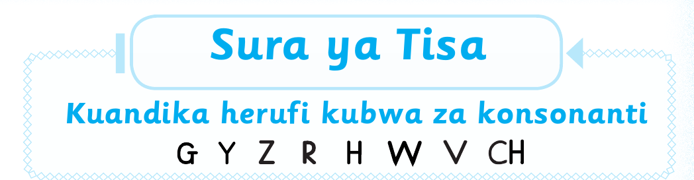
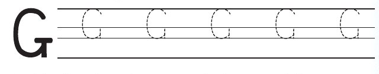
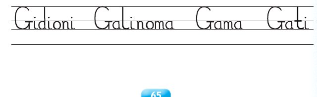

Sura ya Tisa — Somo la kwanza

Sura ya Tisa
Kuandika herufi kubwa za konsonanti
Katika sura hii utajifunza kuandika herufi kubwa za
konsonanti G Y Z R H W V CH.
Somo la kwanza
Kuandika herufi ya konsonanti G
Katika somo hili utajifunza kuandika herufi ya
konsonanti G.
Fuatisha herufi ya konsonanti G.

Andika jibu kwa mkono katika sehemu hii.
Andika herufi ya konsonanti hii kwenye daftari.
Mfano wa kuangalia
Andika jibu kwa mkono katika sehemu hii.
Andika majina haya kwenye daftari.

Andika jibu kwa mkono katika sehemu hii.